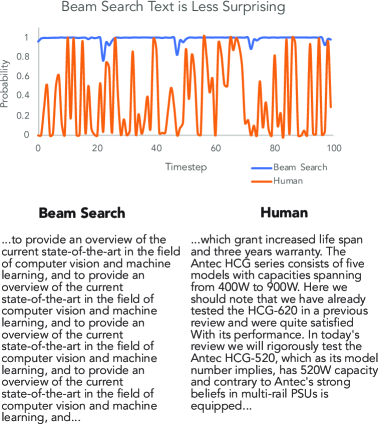

发展脉络
推理由一次前向生成发展为带搜索、验证器和自适应预算的测试时计算，推理质量与计算量开始显式交换。
模型每一步真正吐出来的，是词表上几万个 token 的一整张概率分布。从这张分布里挑出一个词，才是你看到的那个字。挑法不同，同一个模型可以严谨得像法条，也可以放飞得像散文——而这一步全靠你在 API 里设的那几个参数决定。这一节把这几个参数从数学、工程、调参三个角度讲透，并给出可以直接抄的场景对照表。
解码就是「模型给了一张选票统计，你按什么规则宣布当选者」。温度决定这张选票是「一家独大」还是「势均力敌」，Top-k / Top-p 决定谁有资格进入候选名单，最后才是唱票——要么直接选票王（贪心），要么按得票比例抽签（采样）。整条流水线不改一个模型参数，却能让同一个模型呈现出完全不同的「性格」。
自回归模型每前进一步，做的事情永远只有一件：根据已经写出的内容，给词表里每一个 token 打一个分数（logit）。以一个 15 万词表的模型为例，每步产生的就是一个长度 15 万的向量。
Softmax 把这些分数转成概率：
解码策略要回答的问题只有一句：拿到这张概率分布之后，选哪个 token？ 注意这一步完全在模型之外——它不改一个参数、不多跑一次前向，纯粹是后处理。这也意味着两件事：换解码参数是零成本的，而且同一个模型在不同参数下的表现差异，可能比换一个模型还大。
假设模型已经写了「今天天气真」，现在要选下一个词。它内部大致会给出这样一组 logit（数字为示意，用来说明机制）：
| 候选 token | logit | T=1 概率 | 说明 |
|---|---|---|---|
| 好 | 3.0 | 61.2% | 最自然的续写 |
| 不错 | 2.0 | 22.5% | 也很合理 |
| 糟糕 | 1.0 | 8.3% | 语义上说得通，只是不常见 |
| 冷 | 0.5 | 5.0% | 可以接受 |
| 紫色 | 0.0 | 3.0% | 基本是噪声 |
剩下的 14 万多个 token 分数都远低于 0，概率加起来也不到千分之一——但它们仍然存在。这就是解码策略要处理的第一件事：词表的绝大部分是垃圾，但它们的概率不是零。生成 500 个 token，每步都有那么一点点概率踩到长尾，累积起来就变成了「明明前面写得好好的，突然冒出一个莫名其妙的词」。
第二件事是：这张表每一步都在变。上一步选了「好」，下一步的分布就完全不同；如果上一步选了「糟糕」，后面整段话的走向都会跟着变。解码是一个逐步、不可回退的过程，一步的偏差会被后续所有步骤继承。这正是解码策略之所以重要的原因——它不是在做一次决策，而是在做几百次串行的决策。
最简单的规则：每一步都取概率最大的那个 token，即 $x_t = \arg\max_i p_i$。
它的好处很实在——输出可复现、延迟最低、不会冒出莫名其妙的词。抽取式任务（从文本里摘出金额、日期、实体）、分类打标、SQL 生成这类「有标准答案」的场景，贪心几乎总是首选。做单元测试和回归测试时，贪心也是唯一能让断言写得下去的选择。
但贪心有两个绕不开的毛病：
第二个问题值得再展开一点，因为它是一个正反馈：模型在训练时见过大量「前文出现过的短语在后文再次出现」的样本（人写文章确实会重复关键词），所以「已出现过」这个特征本身就会抬高概率；贪心又总是取最大值，于是一旦踏进重复区，它就再也出不来。下面这张状态图描述了这个陷阱：
束搜索是对「每步最优不等于整句最优」的直接补救：同时保留 $k$ 条候选路径（beam），每步把每条路径都往后扩展一格，再从所有扩展结果里按累积对数概率留下最好的 $k$ 条。因为长序列的对数概率天然更小，实践中还要做长度归一化，否则模型会偏爱短句。
直观地说，贪心是「一个人走迷宫」，束搜索是「派 $k$ 个人分头走，每到一个路口就集合一次，淘汰掉走得最差的几个」。$k=1$ 时束搜索退化成贪心；$k$ 越大搜索越充分，代价是每步都要维护 $k$ 份 KV Cache、跑 $k$ 倍的前向。
它在机器翻译、语音识别、摘要这类封闭式任务里是标准配置——这些任务的输出长度大致由输入决定，而且确实存在「更好的译法」这种客观优劣。
还有两个工程上的理由让束搜索基本退出了聊天类 LLM 服务：算力放大 $k$ 倍，以及无法真正流式输出——在所有 beam 收敛到同一前缀之前，你不知道该把哪条路径的 token 推给用户。想象一下：$k=4$ 条路径分别写着「今天天气」「今天的天」「今日气温」「今天气候」，你要往用户屏幕上推哪一个？只能等它们收敛，可这一等，流式的意义就没了。这就是为什么主流对话 API 干脆不提供这个选项。
温度作用在 Softmax 之前：把每个 logit 都除以 $T$，再归一化。这一步不改变任何 token 的相对排名，只改变分布的形状。
temperature=0 直接实现为 argmax——真除以 0 会溢出。「温度」这个名字来自统计物理里的玻尔兹曼分布：高温时粒子在各能级上分布得更均匀，低温时全都挤在最低能级。语言模型借用了同一套数学形式，直觉也是一致的——温度高＝系统更活跃＝更不可预测。
下图是同一组 logits [3.0, 2.0, 1.0, 0.5, 0.0] 在三个温度下的概率分布，可以直观看到「尖」和「平」的差别：
注意末位那个词：温度从 0.5 升到 1.5，它的中签概率涨了 30 多倍。创造力和胡言乱语是同一个旋钮拧出来的，因为分布尾部既藏着新奇的比喻，也藏着错误的事实。这不是模型没调好，而是这个旋钮的物理本质决定的——你无法只把「好的意外」放进来而把「坏的意外」挡在外面。
还要提醒一点：上表只列了 5 个候选，真实词表有十几万个。$T=1.5$ 时，那 14 万个「几乎不可能」的 token 每一个都从 $10^{-8}$ 量级涨到了 $10^{-6}$ 量级，它们加起来的总概率质量可能达到百分之几。这就是高温下模型偶尔蹦出乱码或外语词的来源。Top-k / Top-p 的价值就在于把这条长尾整体切掉。
上一节那张柱状图的数字不是随便画的，它们就是 softmax 手算的结果。就拿页首那张表的 logits [3.0, 2.0, 1.0, 0.5, 0.0] 来算。softmax 的公式是 $p_i = \frac{e^{z_i/T}}{\sum_j e^{z_j/T}}$，温度 $T$ 出现在指数里。
当 $T = 0.5$：先把每个 logit 除以 0.5，得到 [6, 4, 2, 1, 0]，再算 $e$ 的幂：$e^6 \approx 403.4$，$e^4 \approx 54.6$，$e^2 \approx 7.39$，$e^1 \approx 2.72$，$e^0 = 1$。分母（归一化常数）是这些数之和约 469。于是第一个词的概率是 $403.4/469 \approx 86\%$，第二名约 11.6%，第三名 1.6%，最后两名只剩 0.6% 和 0.2%。——这就是「分布变尖」：第一名几乎吃掉了全部概率。
当 $T = 1.5$：把每个 logit 除以 1.5，得到 [2, 1.33, 0.67, 0.33, 0]，对应 $e$ 的幂约为 [7.39, 3.79, 1.95, 1.40, 1]，分母约 15.5。于是第一名概率降到 $7.39/15.5 \approx 47.6\%$，第二名涨到约 24.4%，最后一名也有约 6.4%。——这就是「分布变平」：长尾词一个个抬起头来。
对比这两组数，你会看到温度并不是「均匀地重排概率」，而是改变第一名和其他所有候选之间的比值。$T$ 越大，比值越接近 1，就越接近「随机挑一个」；$T$ 越小，比值差被放大，就越接近「永远选第一」。这也解释了为什么对「有标准答案」的任务要把 $T$ 调到接近 0——你不想让第二名（往往是错误选项）有任何翻盘的机会。
一个常见的直觉误区：温度 0.5 是不是「比温度 1.0 更聪明」？不是。低温只是让模型更专一地选它本来就认为最顺的那个词。如果模型最顺的那个词本身就是错的（知识问题），低温会把这个错误选得更加坚决。温度改变的只是「冒险程度」，不是「判断力」。
只保留概率最高的 $k$ 个 token，其余全部置为 $-\infty$，在这 $k$ 个里重新归一化后抽样。它砍掉了长尾里那些明显荒谬的选项，比纯采样稳得多。
问题出在 $k$ 是个固定值，而分布形状每一步都在变：
| 此刻的分布 | 典型场景 | 固定 k 的后果 |
|---|---|---|
| 非常尖锐，第一名 0.95 | 「中华人民共和国成立于 1949 __」几乎只有一个合理答案 | k=50 会把 49 个概率极低的错误选项拉进候选池，白白引入风险 |
| 非常平坦，前 200 名都在 0.005 上下 | 「他推开门，看见 __」下文可以是任何东西 | k=50 强行砍掉了大量同样合理的续写，输出变得单调 |
换句话说，$k$ 是个「一刀切」的阈值，而语言生成本身是「时而确定、时而开放」的。同一句话里，写到专有名词时分布极尖，写到形容词时分布极平——用同一个 $k$ 显然不合适。
Top-p 换了个思路：不固定候选个数，而是固定候选的概率质量。按概率从高到低累加，取「累积概率刚刚超过 $p$」的最小集合，这个集合就叫核（nucleus）。
还用上面那组数字（$T=1$ 时概率依次为 61.2%、22.5%、8.3%、5.0%、3.0%）：
| 排名 | 概率 | 累积 | top_p = 0.9 是否入选 |
|---|---|---|---|
| 1 | 61.2% | 61.2% | ✅ |
| 2 | 22.5% | 83.7% | ✅ |
| 3 | 8.3% | 91.9% | ✅ 累积首次越过 0.9，到此为止 |
| 4 | 5.0% | 97.0% | ❌ |
| 5 | 3.0% | 100% | ❌ |
妙处在于候选集自动随分布形状伸缩：分布尖锐时可能只留 1～2 个词（该确定的地方就确定），分布平坦时可能留几百个词（该发散的地方就发散）。这正是 Top-p 取代 Top-k 成为默认策略的原因，也是今天几乎所有厂商 API 都提供 top_p 的原因。
提出 Top-p 的那篇论文（Holtzman 等人的《The Curious Case of Neural Text Degeneration》）给出了一个很有说服力的观察：人类真实文本的 token 概率是上下起伏的，有大量「低概率但合理」的用词；而束搜索生成的文本，概率曲线是一条几乎贴着顶的平线。这从量化角度说明了「概率最高 ≠ 最像人写的」。这个观察的原始证据就在下面这张论文原图里，值得花一分钟把它读懂。

这张图的横轴是「按生成顺序排列的每一个 token」，纵轴是「模型给这个 token 的概率」。图里两条轨迹分别是人类写作和束搜索生成。新手读这张图只需要抓一个现象：人类的曲线忽高忽低，束搜索的曲线几乎是一条贴着顶的平线。为什么？因为人类写作会在「顺畅处用高概率词」，也会在「转折、换气、加修饰」时故意选不那么高概率的词——概率低但信息量高；而束搜索每一步都挑概率最高的 token，于是它永远不会主动去选那些「低概率但精彩」的词，整段话就变成了一条毫无起伏的「正确废话」平线。Top-p 存在的全部理由，就是让采样有机会选中这条平线下方那些「低概率但合理」的候选。
Top-p 也不是完美的。它按累积概率切，在极平坦的分布上仍可能保留几百个质量参差的候选；而 min-p 换了个基准：只保留概率不低于「最高概率 × min_p」的 token。比如 min_p=0.1、最高概率是 0.6 时，阈值就是 0.06，低于它的全砍掉；最高概率只有 0.05 时，阈值降到 0.005，候选集自动放宽。
它的直觉是「跟第一名比，差得太远的就没资格参赛」。因为阈值是相对的，分布尖锐时候选集自动收紧、平坦时自动放宽，在高温下比 top-p 更不容易崩。部分开源推理引擎已经支持这个参数，具体是否可用以你所用引擎的官方文档为准。
import torch
def sample_next_token(logits, temperature=1.0, top_k=0, top_p=1.0):
"""logits: 形状 (vocab_size,) 的最后一步原始分数"""
if temperature <= 0: # 温度 0 退化为贪心
return int(logits.argmax())
logits = logits / temperature # ① 温度缩放
if top_k > 0: # ② Top-k：只留分数最高的 k 个
kth = torch.topk(logits, top_k).values[-1]
logits[logits < kth] = float("-inf")
if top_p < 1.0: # ③ Top-p：累积概率刚过 p 的最小集合
sorted_logits, sorted_idx = torch.sort(logits, descending=True)
cum = torch.softmax(sorted_logits, dim=-1).cumsum(dim=-1)
drop = cum > top_p
drop[1:] = drop[:-1].clone() # 右移一位，保证越界的那个词也留下
drop[0] = False # 至少保留概率最高的 token
logits[sorted_idx[drop]] = float("-inf")
probs = torch.softmax(logits, dim=-1) # ④ 在候选集内重新归一化
return int(torch.multinomial(probs, 1)) # ⑤ 按概率抽签两个容易写错的细节：一是 drop 必须右移一位，否则「让累积概率越过 p 的那个词」会被误杀，当第一个词概率就大于 p 时甚至会清空候选集；二是裁剪之后必须重新归一化，否则概率和不为 1。
还有一个实现顺序上的坑：温度必须在裁剪之前施加。如果先按原始分布做 top-p 再调温度，候选集是按 $T=1$ 的形状切的，温度就失去了「扩大候选范围」的作用——你会发现调高温度几乎没效果。主流引擎的默认顺序都是「惩罚 → 温度 → 裁剪」，自己写采样器时别搞反。
即使用了采样，长文本里的车轱辘话仍然很常见。惩罚项的作用是在解码前直接修改 logits，压低已经出现过的 token。三种常见做法机制不同，别混用：
| 参数 | 机制 | 与出现次数的关系 | 适合解决 |
|---|---|---|---|
| presence_penalty 存在惩罚 | 只要出现过，就减去一个固定值 | 无关：出现 1 次和 10 次罚得一样重 | 推动模型换话题、引入新概念，扩大主题覆盖面 |
| frequency_penalty 频率惩罚 | 按出现次数成比例扣分 | 正比：说得越多罚得越狠 | 抑制同一个词、同一句话反复刷屏 |
| repetition_penalty 重复惩罚 | 乘性缩放：正 logit 除以系数、负 logit 乘以系数 | 通常只看是否出现过 | 开源栈里的通用抑制手段，常见取值 1.05～1.15 |
前两个是 OpenAI 风格 API 的参数，取值范围为 −2.0 到 2.0（负值等于鼓励重复）；第三个来自 Hugging Face / 开源推理引擎一脉，是乘性而非加性的，所以 1.0 才表示「不惩罚」。具体参数名与默认值以各家官方文档为准。
还有一种更硬的手段叫 no_repeat_ngram_size：直接禁止任何长度为 $n$ 的片段重复出现，实现上是把会造成重复的那些 token 的 logit 设为 $-\infty$。它的效果立竿见影，但副作用也最大——比如设 no_repeat_ngram_size=3，「人工智能技术」这个词组在全文只能出现一次，第二次想写就必须换说法。写论文摘要之类需要反复提到同一个术语的文本时，这个参数几乎不能用。
self.、循环里反复出现的变量名、成对的括号。惩罚项无差别地压低这些 token，会导致模型写到一半突然改用别的变量名，或者干脆漏掉缩进。生成代码、JSON、表格这类结构化内容时，把三种惩罚全部关掉。同理，生成 CSV、日志、配置文件这类高度重复的格式化文本时也要关。
选词规则解决「写什么」，停止条件解决「写到哪」。这一块参数不影响文风，但线上事故里它们的出镜率一点不比温度低。
| 机制 | 作用 | 典型故障 | 排查方向 |
|---|---|---|---|
| EOS token | 模型自己判断「说完了」，生成结束符 | 模型不肯停，一直往下写 | 检查是否用错了 chat template，导致模型没学过在这个格式下停 |
| max_tokens | 硬上限，到了就砍断 | 回答被截成半句、JSON 缺右括号 | 调大上限；或让模型先输出结论再展开 |
| stop 停止串 | 生成到指定字符串就停，且该串通常不包含在返回里 | 停止串出现在正文中间，回答被提前掐断 | 选足够独特的停止串，别用「。」这种高频字符 |
| min_tokens | 在达到下限前屏蔽 EOS | 模型被迫凑字数，说废话 | 一般不需要设；除非模型总是敷衍地只回一句 |
特别提醒 max_tokens 与结构化输出的组合：模型在写一个长 JSON，写到第 900 个 token 时撞上上限，返回给你的就是一段语法不合法的半截 JSON。解析必然失败，而错误信息只会告诉你「意外的输入结束」，很难让人第一时间联想到是长度上限的问题。养成习惯：解析失败时先看返回体里的 finish_reason，如果是 length 而不是 stop，那就是被截断了，跟提示词无关。
logit_bias：对指定 token 手动加分或减分。典型用法是做一个只能回答「是/否」的分类器——把这两个 token 加很高的分，其余全压低，模型就只能在两者间选。也可以用它来屏蔽特定词汇。缺点是要按 token id 指定，而 token 切分方式随 tokenizer 而变，换模型就得重做映射。seed：固定随机数种子。在采样场景下，同样的 seed + 同样的输入应该给出同样的输出。注意这只是「尽力而为」——下面「坑二」会讲为什么它也不能保证严格复现。n：一次请求返回多个候选。它比调用 $n$ 次便宜，因为 prompt 的 prefill 只需要算一次，KV Cache 可以共享。做 Self-Consistency 或 Best-of-N 时应当优先用这个参数而不是循环调用。logprobs：返回每个位置被选中 token 的对数概率，通常还能返回前几名候选。这是调试解码问题最有力的工具——模型「犹豫」时，第一名和第二名的概率会很接近；模型「确信」时，第一名会遥遥领先。用它可以给回答做一个粗糙的置信度估计。初学者容易把这两个词跟上面的采样参数混在一起，其实它们解决的是完全不同的问题。
如果你要求输出必须是合法 JSON，那么在写完 {"name" 之后，下一个 token 只能是 :，别的都不合法。约束解码的做法是：在采样之前，用一个状态机（通常由 JSON Schema 或正则/语法编译而来）算出「此刻哪些 token 合法」，把非法 token 的 logit 全设成 $-\infty$。这样无论温度多高、怎么采样，输出都保证符合语法。
它和 top-p 的区别在于依据不同：top-p 按概率切，约束解码按语法切。两者可以叠加——先用语法掩码保证合法，再在合法候选里按 top-p 采样。详见 结构化输出与约束解码。
投机解码（speculative decoding）用一个小模型先「猜」几个 token，再让大模型一次性并行校验：猜对的部分直接采纳，猜错的地方从那里重来。它的关键性质是数学上保证输出分布与大模型单独解码完全一致——它只改速度，不改结果。
所以它跟本页讲的所有参数是正交的：你设的温度、top_p 照样生效，只是生成得更快。这一点很容易被误解，值得记牢：采样参数改变「写什么」，投机解码只改变「多快写出来」。原理见 投机解码。
下表是可以直接抄的起点。真实取值仍需按你的模型和任务微调，但方向不会错：
| 场景 | temperature | top_p | 惩罚 | 为什么 |
|---|---|---|---|---|
| 代码生成 | 0 ～ 0.2 | 1.0（不裁剪） | 全关 | 语法几乎只有一条正确路径，随机性只会引入 bug；且必须可复现才好排查 |
| 结构化输出 / 函数调用 | 0 | 1.0 | 全关 | 格式正确率优先，配合约束解码效果更好 |
| 事实问答 / 信息抽取 | 0 ～ 0.3 | 1.0 | 全关 | 降低采到长尾错误答案的概率，直接减少幻觉 |
| RAG 问答 | 0 ～ 0.3 | 1.0 | 全关 | 答案应当由检索到的资料决定，而不是由随机数决定 |
| 翻译 / 摘要 | 0.2 ～ 0.4 | 0.9 | 轻微 frequency | 需要一点措辞灵活度，但不能偏离原意 |
| 日常对话 | 0.6 ～ 0.8 | 0.9 | frequency 0.2 ～ 0.5 | 要自然不呆板，同时防止多轮之后开始说车轱辘话 |
| 创意写作 | 0.8 ～ 1.0 | 0.9 ～ 0.95 | presence 0.3 ～ 0.6 | 需要意外性；presence 惩罚推动它不断引入新意象 |
| 头脑风暴 / 多样化候选 | 0.9 ～ 1.1 | 0.95 | presence 偏高 | 目标是铺开可能性，重复的点子没有价值 |
| Agent 工具调用 | 0 ～ 0.2 | 1.0 | 全关 | 参数填错一个字段整条链路就断，Agent 场景要的是稳定不是文采 |
temperature。它们的输出质量主要由思考过程决定，而不是由解码参数决定。用之前先看官方文档，别把通用经验直接套上去。
这两个参数作用在同一件事上——分布的有效宽度，但方向可能相反。调高温度是为了把尾部概率抬起来增加多样性，而 top_p 又会把刚抬起来的尾部直接切掉；反过来，低温本已让分布极尖，此时 top_p 无论设多少都几乎不起作用（因为第一个词就吃掉了 90% 以上的概率质量）。
结果就是你调了半天参数，效果毫无规律，因为你在同时拧两个耦合的旋钮。正确做法：固定一个、只调另一个。 主流厂商文档也普遍建议二选一。实践中的常见约定是把 top_p 固定为 1.0，只用温度控制；或者把温度固定为 1.0，只用 top_p 控制。
贪心解码在数学上确实是确定的，但线上服务里同样的输入仍可能得到不同输出。原因不在解码，而在底层：GPU 浮点归约的顺序不保证一致，同一个请求跟不同的请求拼在一起做批处理（batch）时，累加顺序会变，logits 末位就可能差一点点——而两个 token 分数极接近时，这一点点足以翻转 argmax，此后整句话都会分岔。MoE 模型的专家路由在批次变化时同样可能抖动。
所以「temperature=0 保证可复现」只在单请求、固定硬件、固定引擎版本的前提下近似成立。做回归测试时要有心理准备，别把断言写成逐字符相等。更实用的做法是断言「关键字段值正确」「JSON 能解析」「包含某个必需片段」这类语义级判断，而不是整段比对。
输出不对就去拧温度，是很常见的下意识动作，但它能解决的问题其实很有限。解码只决定「从模型已有的概率分布里怎么挑」，它无法凭空创造模型没有的知识和能力：
能靠解码参数解决的，基本只有三类：输出太发散/太死板、复读、以及需要可复现。
采样本身就是随机的。同一组参数跑两次，一次很惊艳、一次很平庸，是完全正常的。如果你「改了温度，感觉变好了」，很可能只是这一次抽签运气好。
正确的评估方式是：固定一组测试样例（至少 20～50 条），每组参数各跑 3～5 次，看聚合指标——格式正确率、事实错误率、人工评分均值，而不是盯着某一条输出。这套流程可以固化成 CI，见 提示评测与 CI。
与其凭感觉调，不如花十分钟跑一次网格扫描。下面这段脚本对同一批测试用例遍历若干组参数，统计「格式合法率」和「答案一致率」两个可自动计算的指标。它不依赖具体厂商 SDK，把 call_model 换成你自己的调用即可：
import json, itertools, collections
TEMPS = [0.0, 0.3, 0.7, 1.0]
TOP_PS = [1.0, 0.9]
REPEATS = 3 # 每组参数重复几次，抵消采样随机性
def call_model(prompt, temperature, top_p):
"""替换成你自己的调用；返回字符串"""
raise NotImplementedError
def is_valid_json(text):
try:
json.loads(text)
return True
except Exception:
return False
def scan(cases):
"""cases: [{"prompt": ..., "gold": ...}, ...]"""
report = []
for temp, top_p in itertools.product(TEMPS, TOP_PS):
ok_format, ok_answer, total = 0, 0, 0
# 记录同一条用例多次采样的答案，衡量稳定性
stability = []
for case in cases:
answers = []
for _ in range(REPEATS):
out = call_model(case["prompt"], temp, top_p)
total += 1
if is_valid_json(out):
ok_format += 1
if json.loads(out).get("answer") == case["gold"]:
ok_answer += 1
answers.append(out)
# 多次采样中出现频次最高的那个占比 = 稳定性
top_cnt = collections.Counter(answers).most_common(1)[0][1]
stability.append(top_cnt / REPEATS)
report.append({
"temperature": temp,
"top_p": top_p,
"format_ok": round(ok_format / total, 3),
"answer_ok": round(ok_answer / total, 3),
"stability": round(sum(stability) / len(stability), 3),
})
# 先按正确率排，正确率接近时优先选更稳定的
report.sort(key=lambda r: (-r["answer_ok"], -r["stability"]))
for r in report:
print(r)
return report跑完之后你通常会看到三种典型形态，据此就能判断该往哪个方向调：
| 扫描结果的形态 | 说明什么 | 下一步该做什么 |
|---|---|---|
| 温度越低正确率越高，且低温下稳定性接近 1.0 | 这是一个有标准答案的任务 | 直接锁 temperature=0，别再纠结采样参数 |
| 各组正确率都差不多，只有稳定性有差异 | 解码参数不是瓶颈 | 去改提示词、加检索、或者换模型，调参没用 |
| 格式合法率在高温下明显掉 | 模型对格式的掌握不牢，高温把它推出了安全区 | 上约束解码，而不是靠低温硬扛 |
解码策略的每一次变化，几乎都是被「上一代方法暴露出的具体失败」逼出来的：
这条脉络里有一个反复出现的模式：每当一种方法被用到它设计意图之外的场景，就会暴露新问题，进而催生下一代方法。束搜索本是为翻译设计的，被拿去写故事就露怯；Top-k 本是为「砍长尾」设计的，遇到分布形状剧烈变化就露怯；Top-p 本是为「自适应候选集」设计的，在极端高温下又显得不够。
对使用者的启示是：不存在「最好的解码策略」，只存在「跟你的任务分布匹配的解码策略」。判断标准不是它有多新，而是你的任务是偏封闭（有标准答案）还是偏开放（要多样性）。
finish_reason，是 length 就说明被截断了。标准回答：温度先缩放 logits，控制分布尖锐程度；Top-k 保留固定数量的最高概率 token；Top-p 保留累计概率达到阈值的最小候选集合。温度影响整体随机性，Top-k/Top-p 直接裁剪候选空间。
标准回答：贪心每一步只选当前最大概率 token，没有考虑后续序列的联合概率和任务目标，容易重复、保守或陷入局部最优。开放式写作常用温度加 Top-p；需要约束和确定性时才优先贪心。
Beam Search 倾向于最大化模型概率，语言模型的高概率序列可能更安全、更短、更重复；它在机器翻译等条件生成任务中更有价值，但不是所有开放式对话的默认最优解。
标准回答：它会压低已经出现过的 token 概率，而代码中的括号、缩进标记、字段名和 JSON 语法本来就需要重复。对结构化输出应优先使用约束解码或 schema 校验，不能盲目提高 repetition penalty。
logits = logits / temperature
# 再按 top_k 或 top_p 裁剪候选本章聚焦生成阶段的决策：采样和解码、Self-Consistency、Best-of-N、树搜索、验证器，以及 test-time scaling 的成本边界。
阅读提示：推理时扩展不是无条件增加采样次数；先确认任务是否可验证，再把额外计算预算放到候选生成、验证或搜索中的瓶颈。
Nucleus sampling 的原始论文，解释贪心/beam search 为什么会导致重复和退化。
通过多条推理路径投票提高可验证任务准确率，是 test-time scaling 的基础范式。
过程奖励模型和逐步验证的代表作，说明“答案对不对”和“推理过程是否可靠”是不同信号。
把语言模型生成组织成可回溯的搜索树，适合和页面中的 beam、Best-of-N 对照。
大规模推理强化的公开技术报告，适合观察奖励设计、冷启动和蒸馏的组合方式。
资料优先选用原始论文、官方文档、大学课程和公共机构材料；链接按 2026-08-10 检索，具体版本以来源页面为准。
推理由一次前向生成发展为带搜索、验证器和自适应预算的测试时计算，推理质量与计算量开始显式交换。
区分采样、束搜索、树搜索、验证器和思维长度；记录 token、并行分支、停止条件和最终选择规则。
更长的推理链不必然更准确，延迟、显存、重复率和错误传播都需要纳入预算。
混合推理、过程奖励、草稿-验证解码和自适应思考预算是当前主线，仍需任务级而非单一榜单评估。
能从条件分布解释 greedy、beam、temperature、top-k/top-p、重复惩罚和停止条件，并为任务选出可复现策略。
先修 Transformer decode、概率分布和 KV Cache；同时记录质量、token、延迟和停止条件。
对固定 logits 手算 greedy、temperature、top-k 与 top-p 后的分布；程序采样 10000 次核对频率，再对 10 个 prompt 比较确定性、重复率、长度和停止原因。
经验频率与理论概率最大绝对差小于 0.02；temperature=0 路径完全可复现，且停止 token、最大长度和异常空输出都有测试。